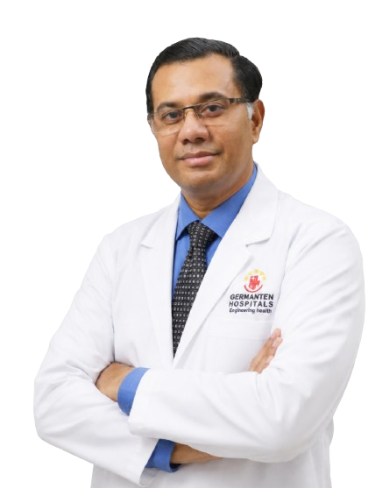

International orthopedic collaboration
Dr. Mir Jawad Zar Khan
Dr. Mir Jawad Zar Khan has done his Masters, M.S (Orthopaedics) from Osmania University, Hyderabad and M.Ch Orthopedics from Usaim, Seychelles. He has done fellowship in arthroplasty in world prestigious orthopedic institute in Munich Germany where he has worked with international experts in joint replacements surgeries. He was awarded best outgoing postgraduate with highest marks in Andhra Pradesh state.
Germany
trained
Arthroplasty
fellowship
Academic
distinction